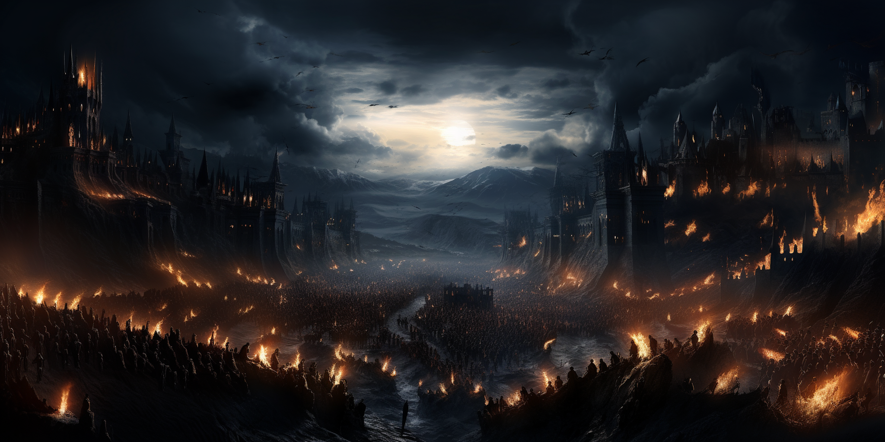

| Introduccion |
|---|
|

Fae'Gir...En las páginas amarillentas de los tomos olvidados, se narra la leyenda de Fae'Gir, un nombre que se desliza como un susurro entre las grietas del tiempo. Desde el instante en que las palabras empezaron a danzar en los libros, este nombre ha persistido, una melodía misteriosa que resuena en las vastas estanterías de las bibliotecas que custodian las crónicas de los reinos. ¿Pero de qué rincón oculto de la creación brotó este conjunto de letras entrelazadas? Un enigma que desafía los intentos de los eruditos por desentrañar su origen. Así nació la creencia popular: Fae'Gir, el dios que descendió por vez primera sobre el Imperio, sembrando la semilla mágica que germinó en todo lo que siguió. Sin embargo, la luz que Fae'Gir supuestamente regaló al mundo era un resplandor matizado por la relatividad. En aquel plano, la noche se alzó con igual fervor que el día, y las criaturas nocturnas tejieron sus sombras entre los destinos de los humanos. En ese vasto escenario macabro, la dualidad de la existencia se desplegó como un intrincado tapiz de pesadillas: luz y oscuridad, vida y muerte, orden y caos, en una danza eterna inscrita en las páginas ensangrentadas desde los albores de los tiempos. Ahora tan solo nos queda un impío mundo regido por la avaricia, las traiciones y las adversidades, donde cada llanura es un cementerio de cadáveres sin nombre, donde cada bosque es una tumba de árboles que amenzan con engullir a todo el que en ellos entra, y donde todos han de luchar con uñas y dientes por encontrar un lugar en el que encajar sin morir en el intento. |
| Facciones |
|---|
Cénit Sombrio.
Escudo de armas del Cenit. En las sombras más profundas del mapa yace Cénit, un territorio sumido en la oscuridad más profunda. En esta tierra, los rituales se entrelazan con la hechiceria en todas sus formas, desde los misterios de la magia negra hasta los sacrificios que manchan la tierra. La capital, Corona de Ebano, envuelta en una noche perpetua tejida por artes oscuras, se convierte en el refugio de todo tipo criaturas nocturnas, como los vampiros que dan imagen a la burguesia. A pesar de la aparente anarquía de estos actos, la sociedad se adhiere a ciertas normas, aunque estas solo sirvan para sostener el corazón corrompido del reino. En esta cúspide decadente, la aristocracia vive en la opulencia, mientras que la esfera inferior se debate en la penumbra de la miseria, mas el Cenit es el unico lugar que ofrece total amparo a aquellos que han sido bendecidos por la magia, o que quieren estudiar las artes de esta, siempre y cuando no permitan que la adversidad de la noche pueda con ellos La autoridad en el imperio siempre se había equilibrado en un delicado dúo, con un representante de las razas comunes, humanos, elfos y demás, y otro de las criaturas nocturnas, perpetuando su reinado de sombras y secretos. Sin embargo, recientemente, ese equilibrio se ha visto alterado. Donde antes había dos, ahora gobiernan tres, formando lo que se conoce como la Triada Impía. Un nuevo y enigmático integrante se ha unido a sus filas, amenazando con catapultar al mundo hacia la misma noche eterna que envuelve a la Corona de Ébano. El objetivo último del Cénit sigue siendo un imán para devotos, atrayéndolos como polillas hacia la luz... O hacia la oscuridad: un mundo de magia, un plano onírico que acoge a todas y cada una de las criaturas capaces de enfrentar las adversidades, sin importar su origen, sin discriminar razas, magias y culturas, o los actos que hayan marcado su camino. Tierra de los Amaneceres.
Escudo de armas de las Tierras. La Tierra de los Amaneceres emerge como un bastión de resistencia, una respuesta a la oscuridad de Cénit. Nacidos desde una rebelión que busca erradicar la magia y todo lo asociado al oscuro reino, recurren a la alquimia como una ciencia que desafía y compite contra las artes arcanas, además de contar con la bendición de la Luz, que clérigos, caballeros y paladines blanden como una radiante arma que purga el mal.. Gideon, el ilustre líder de esta monarquía, encabeza la lucha contra la magia, adoptando una postura similar a una inquisición implacable. Su visión es la de una prosperidad libre del yugo de las criaturas nocturnas, y la corrupcion, caos y destruccion que, a sus ojos, la magia gesta en el corazon de las personas, usando la luz como guía y rechazando cualquier sombra que se atreva a empañar su reino. Tras migrar al oeste como una nación unida, y después de librar incontables guerras hasta poder asentarse, Gideon, con la ayuda de La Orden Dorada, sus más fieles y nobles caballeros, y, por supuesto, los fervientes seguidores que buscaban escapar del yugo del Cénit, fundaron La Ciudad Elísea, capital de las Tierras, en el punto más lejano a la Corona de Ébano. Éste enclave se alza como un faro de esperanza en Las Tierras del Amanecer, desafiando la oscuridad que amenzaba con sumir al mundo en una eterna noche. Sin embargo, no hay cabida para la magia en el idílico mundo que Gideon y sus seguidores buscan crear. A través de las cruzadas y su inquisisión, la única salida que tienen aquellos 'maldecidos' por la hechicería, es la muerte, o someterse a un ritual alquímico que les privaría de toda su magia para el resto de sus vidas. Pero cualquier destello de 'bueno' en las tierras de Fae'Gir es efímero: Gideon, el monarca venerado, cayó víctima de una emboscada cruel, una traición que susurraba la sombra de la Triada. La herida del rey, dicen, sangraba no solo sangre, sino oscuridad misma. Desde ese fatídico día, la imponente figura del rey se retiró a la fortaleza del Bastión Radiante, que se alza como guardián sobre la Ciudad Elísea. Han transcurrido meses desde aquel sombrío acontecimiento, y aunque los rumores sugieren que Gideon aún gobierna desde las alturas de las torres de la capital, la ausencia de su resplandeciente presencia no solo alimenta las malas lenguas, sino que también abre de nuevo la puerta a la persistente amenaza de una noche eterna que se cierne sobre el horizonte. En este turbio escenario, la incertidumbre teje sus hilos en la penumbra, y la sombra de la conspiración se cierne como un manto sobre La Tierra de los Amaneceres. Marcas del Norte.
Escudo de armas del Las Marcas. Las vastas extensiones de las Marcas del Norte, evocando la fría majestuosidad de epopeyas heladas, se presentan como tierras desoladas, inhóspitas tanto en términos climáticos como en la naturaleza de sus habitantes. En este rincón implacable, donde la tierra se hiela en la penumbra perpetua, la vida ha tejido una historia de adversidad que ha forjado a un pueblo de resistencia, dotado de una fortaleza y rudeza que sobrepasan los límites de lo común. Las tribulaciones cotidianas en estas tierras fronterizas han cincelado a la población de las Marcas del Norte, infundiéndoles una dureza y tenacidad que solo puede ser forjada en el crisol de la adversidad constante. Enfrentan las plagas que azotan sus hogares y combaten las criaturas aberrantes del norte, como los ghouls y dragones, que emergen de las sombras gélidas para desafiar la existencia misma. En su firme rechazo tanto a la siniestra influencia de Cénit como a la luminosa resistencia de la Tierra de los Amaneceres, las Marcas del Norte se erigen como una fortaleza impenetrable. Este rechazo no es solo un acto de desafío, sino un testimonio de su independencia arraigada y su determinación férrea de labrar su propio destino en medio de las adversidades que la región les presenta. El sentido del hogar en las Marcas del Norte no es solo una ubicación geográfica; es una conexión profunda con la tierra congelada que han aprendido a llamar hogar. Este apego se entrelaza con una devoción inquebrantable a sus propios dioses, deidades que han sido testigos silenciosos de las batallas libradas en la gélida penumbra. Así, con una determinación que emana de las raíces de su tierra, las Marcas del Norte permanecen como un reino independiente y resiliente, inquebrantable en su resistencia contra las fuerzas que amenazan con envolverlos. Actuando como un bastión entre las tierras más allá del norte y el resto del imperio, las Marcas del Norte se erigen como guardianes incólumes, enfrentando los desafíos venidos del oscuro horizonte y protegiendo las tierras del imperio de las sombras que yacen más allá de sus fronteras. Por ese mismo motivo, por la dureza de sus gentes, y su importante papel en el mapa, ni Las Tierras ni el Cenit suelen adentrarse en su territorio con fines belicos. Reinos Libres.
Simbolo que representa los Reino Libres. En los Reinos Libres, vastas extensiones donde la autonomía es la norma, se alzan refugios que desafían las ataduras de las tres principales alianzas. Son ciudades, o influyentes grupos que han logrado no afiliarse ni seguir las normas de ninguna de las tres Alianzas principales. Por ejemplo, Bahía Negra, se erige como un bastión audaz para los sabuesos de mar, aquellos que se niegan a doblegarse ante las leyes impuestas. En este rincón temerario, las aguas turbulentas acogen a quienes ondean la bandera pirata con orgullo y sin restricciones. Aquí, la jerarquía pirata establece su propio orden, desafiando las convenciones y trazando su destino en las traicioneras olas del océano. La autonomía reina en este refugio, donde la lealtad se gana con astucia y la autoridad se afirma con valentía, lejos de las influencias de las alianzas dominantes. En contraste, las Arboledas, también parte de los Reinos Libres, albergan a aquellos que buscan la comunión con la naturaleza y rechazan cualquier subyugación a las alianzas establecidas. Aquí, entre los susurros de los árboles ancestrales, los druidas encuentran su hogar, manteniendo un equilibrio sagrado con la tierra y resistiéndose a las imposiciones de los reinos. En las Arboledas, la autonomía se manifiesta en la armonía con la naturaleza. Las decisiones son guiadas por el susurro de las hojas, y las criaturas del bosque son aliadas en la lucha contra cualquier intento de conquista. Los druidas, como guardianes de estos bosques encantados, entrelazan su destino con el flujo eterno de la vida, defendiendo la independencia de sus dominios. Estos lugares independientes, ya sea Bahía Negra con su bandera pirata ondeando sin restricciones o las Arboledas con sus druidas resistiendo en la penumbra de los árboles ancestrales, forjan sus propias narrativas en la tela del tiempo. Al no afiliarse a ninguna de las tres alianzas principales, se erigen como testigos y protagonistas de la libertad que impera en los Reinos Libres, trazando su destino en la libertad de las olas traicioneras o en la armonía eterna de la naturaleza. |